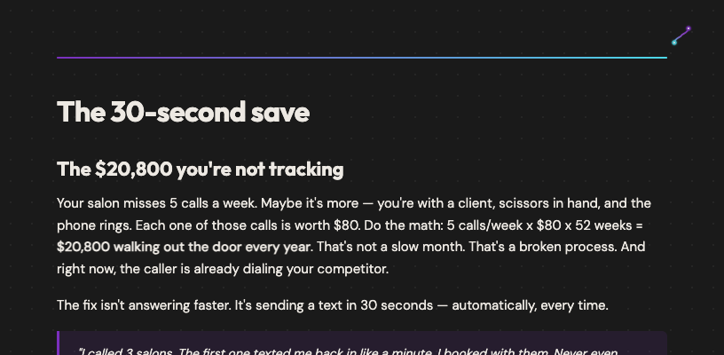

Free guide — Salon automation
The 30-second save
Your salon misses 5 calls a week. Maybe it's more — you're with a client, scissors in hand, and the phone rings. Each one of those calls is worth $80. Do the math: 5 calls/week × $80 × 52 weeks = $20,800 walking out the door every year. The fix isn't answering faster. It's sending a text in 30 seconds — automatically, every time.

Download free guide
PDF — 3 pages — No email required
What's inside
- → The $20,800 math — where the revenue is actually leaking
- → How the 30-second text automation works (with before/after numbers)
- → 6-step DIY map using Twilio + n8n — plus the gotchas to avoid